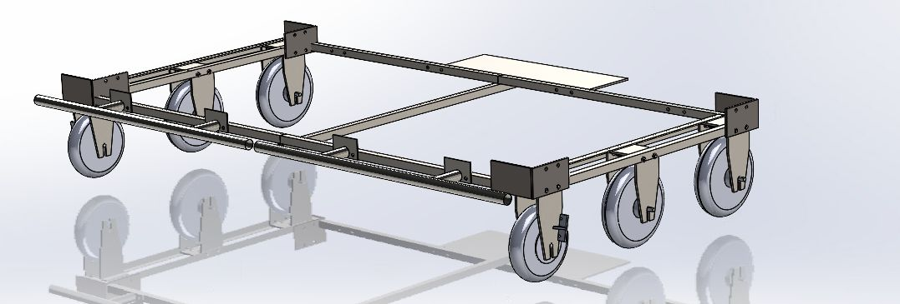

The story
This was my first taste of engineering outside a classroom, back in my early Georgia Tech days before I really knew what I was doing. The premise was as outlandish as it sounds: a couch you could actually drive. I took on the controls, turning a game controller into a way to pilot a piece of furniture, and the fun lived in the handful of small design problems it took to get there.
The first question was what to even drive it with. We went back and forth between a Wii remote and nunchuck, a GameCube controller, and an old arcade-style joystick before landing on a PS4 controller. We also made a deliberate choice to go wireless. Nothing forced us to, but it was cooler and it freed the driver from being tethered to the couch, so we took on the added complexity on purpose.
Figuring out the controls
With the PS4 controller chosen, its two thumbsticks opened up how to actually drive. The couch drove like a tank, with no steering wheel, just different amounts of power sent to the left and right wheels, so the core problem was mapping a stick's position to the right power split between the two sides. We could have crammed throttle and steering onto one stick, but it felt clumsy, so we used both: the left stick became pure throttle (how fast the wheels spun) and the right stick handled steering (how that power got divided side to side). That separation is what made the couch genuinely intuitive to drive.
Going wireless had one catch. The Arduino lived down in the frame underneath the couch which would cause the signal to sometimes cut out, leading to us sometimes having to compromise and run a USB cable straight from the controller to the Arduino. A potential solution we conceptualized was to implement an extended antenna into the wireless receiver on the Arduino that would stick out from the back of the frame. This would enable an uninterrupted connection between the controller and Arduino, creating a more reliable and seamless driving experience.

What it taught me
I didn't have much formal engineering behind me yet, which was the whole point. It showed me how broad mechanical engineering really is and how many kinds of problems we get to solve, and learning that on something as gloriously goofy as a motorized couch is what made it stick. It is the project that made me want more.